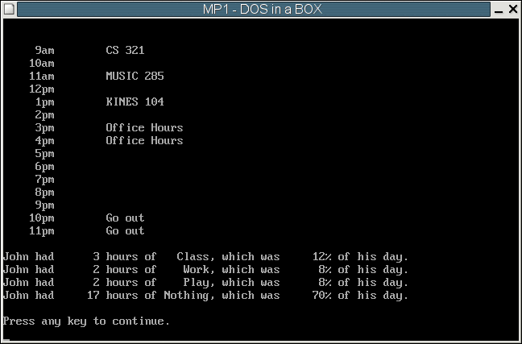

| Assigned | Thursday, 29 January 2004 |
| Due Date | Wednesday, 11 February 2004 |
| Purpose | Learn to write assembly code. Use looping and branching. Perform memory accesses and manipulation. |
| Points | 70 |
As engineers, you all know how important it is to manage your time. Sometimes, however, even good engineers get swamped with classes, work, due dates, and other obligations. In this machine problem, you'll help tackle this problem by making a single day planner that schedules and lists all the tasks for each day in its database.
Your program is required to:
In our implementation of the schedule maker, there are a few key things to know:
Each entry in the ClassSchedule, WorkSchedule, and PlaySchedule databases
has the following format:
Day code,Start time,Duration,Description | 1 byte| 1 byte| 1 byte|up to 13 bytes|Day code is a byte-sized integer with the following meaning:
| Day code | Day of week |
| 0 | Monday |
| 1 | Tuesday |
| 2 | Wednesday |
| 3 | Thursday |
| 4 | Friday |
Duration is a byte-sized integer that tells how many hours an event lasts.
An example entry is highlighted below:
ClassSchedule db 0,9,1,"CS 321",'$',0,0,0,0,0,0
db 0,11,1,"MUSIC 285",'$',0,0,0
db 0,13,1,"KINES 104",'$',0,0,0
db 1,13,2,"LEIST 100",'$',0,0,0
db 1,15,1,"ECE 311",'$',0,0,0,0,0
db 1,17,1,"MUSIC 287",'$',0,0,0
This entry tells us that there is an event called "ECE 311" on Tuesday (Day code 1), at 3pm (hour 15),
for 1 hour. The zeros at the end of this entry (and most other entries) don't do anything but
simply pad the entry out to be 16 bytes long.

In this machine problem, the main procedure is provided for you; however, you must write the code to replace the library procedures. You will replace these procedures from the LIBMP1 library by commenting out the statements calling the library procedure and adding your code. Each procedure that you write should match the output of the library code exactly. Each of the function calls and their functionality is described below in the Procedures section. The best way to get a feel for the program is to run it to see how it is supposed to operate. You can also edit the test file to see how various changes will affect the program execution.
The program can be run by typing mp1 at the command prompt.
As you work on each machine problem, you will keep a simple MP development log. The log will document your design decisions, development plan, and debugging experiences, including the time you spent on different parts of the machine problem. The log may be kept in any form. In general, whenever you work on a machine problem, briefly record the starting time, significant design decisions, progress in coding and testing, bugs you discovered, and the ending time. Do not record simple syntax errors detected by NASM at assembly time; these are not considered to be bugs.
For each machine problem, beginning with MP1, you will submit a cover memo of 200 to 400 words (up to one page, single spaced). The cover memo should answer the following questions, based on the information that you record in your MP development log.
This assignment has seven procedures. Three of them are given in the mp1.asm file. You will receive credit by replacing the other four procedures listed below with your own code.
| CheckEntry |
|
| CalculatePercentages |
|
| DisplaySchedule |
|
| DisplayPercentages |
|
; MP1 - Scheduling Program
; Your Name
; Date
;
; Zbigniew Kalbarczyk, Spring 2004
; Author: John King
; University of Illinois, Urbana-Champaign
; Dept. of Electrical and Computer Engineering
;
; Version 1.5
BITS 16
;====== SECTION 1: Define constants =======================================
CR EQU 0Dh
LF EQU 0Ah
TAB EQU 09h
;====== SECTION 2: Declare external routines ==============================
; Declare external library routines
EXTERN kbdin, kbdine, dspout, dspmsg, mp1xit, binasc
EXTERN libBuildSchedule, libCheckEntry, libCalculatePercentages
EXTERN libDisplaySchedule, libDisplayPercentages, libCopyString
; Declare local routines
GLOBAL CheckEntry, CalculatePercentages, CopyString
GLOBAL DisplaySchedule, DisplayPercentages, PauseAndClearScreen
; Make program variables global
GLOBAL TableAddresses, ClassSchedule, WorkSchedule, PlaySchedule
GLOBAL HoursArray, PercentArray, SuccessfulSchedule, FreeSlot
GLOBAL DaySchedule
GLOBAL MainMenuText, InvalidText, UnableText, PauseText
GLOBAL SchedulingText, EllipsesText, CRLFString, HourTypes
GLOBAL PMText, AMText, JohnHadText, HoursOfText, WhichWasText
GLOBAL PercentText, ClassString, WorkString, PlayString, NothingString
GLOBAL AsciiNumber
;====== SECTION 3: Define stack segment ===================================
SEGMENT stkseg STACK ; *** STACK SEGMENT ***
resb 64*16
stacktop:
resb 0 ; work around NASM bug
;====== SECTION 4: Define code segment ====================================
SEGMENT code ; *** CODE SEGMENT ***
;====== SECTION 5: Declare variables for main procedure ===================
TableAddresses dw ClassSchedule, WorkSchedule, PlaySchedule
; Format for each database entry:
; | Day code | Start time | # of hours | Description
; | (1 byte) | (1 byte) | (1 byte) | (String terminated with '$')
; .
; /|\
; |
; |
; bx
;
; To access all members of this entry, I recommend setting bx (or si or di)
; to "point to" the first byte of the entry as shown above. This means that
; bx will hold the address of the first byte of the entry. This will make
; it easy to access all the elements in the database entry.
;
; Each entry in all the databases is 16 bytes long, so to move from one
; entry to the next in the list, simply add 16 to bx.
ClassSchedule db 0,9,1,"CS 321",'$',0,0,0,0,0,0
db 0,11,1,"MUSIC 285",'$',0,0,0
db 0,13,1,"KINES 104",'$',0,0,0
db 1,13,2,"LEIST 100",'$',0,0,0
db 1,15,1,"ECE 311",'$',0,0,0,0,0
db 1,17,1,"MUSIC 287",'$',0,0,0
db 2,9,1,"CS 321",'$',0,0,0,0,0,0
db 2,11,1,"MUSIC 285",'$',0,0,0
db 2,13,1,"KINES 104",'$',0,0,0
db 3,13,2,"LEIST 100",'$',0,0,0
db 3,15,1,"ECE 311",'$',0,0,0,0,0
db 3,17,1,"MUSIC 287",'$',0,0,0
db 4,9,1,"CS 321",'$',0,0,0,0,0,0
db 4,11,1,"MUSIC 285",'$',0,0,0
db 4,13,1,"KINES 104",'$',0,0,0
db -1
WorkSchedule db 0,16,2,"Office Hours",'$'
db 1,20,4,"Grade MPs",'$',0,0,0
db 2,15,2,"Office Hours",'$'
db 3,18,2,"Office Hours",'$'
db -1
PlaySchedule db 1,18,2,"Basketball",'$',0, 0
db 2,22,2,"Go out",'$',0,0,0,0,0,0
db 3,17,2,"Basketball",'$',0,0
db 4,19,2,"Nap",'$',0,0,0,0,0,0,0,0,0
db 4,21,3,"Go out",'$',0,0,0,0,0,0
db -1
; HoursArray is used to keep track of how many hours are spent in each
; category - Class, Work, and Play (it is padded with an extra byte to make it
; a nice round 4 bytes long)
HoursArray times 4 db 0
; PercentageArray is used to store what percent of each day is spent in each
; category - Class, Work, Play, and Nothing.
PercentArray times 4 db 0
; DaySchedule is an array where events and tasks get placed for a
; particular day. It is used to make sure there are no scheduling conflicts,
; and to lay out the schedule of events nicely so DisplaySchedule can easily
; print the day's schedule to the screen.
DaySchedule times 16 db '$'
times 16 db '$'
times 16 db '$'
times 16 db '$'
times 16 db '$'
times 16 db '$'
times 16 db '$'
times 16 db '$'
times 16 db '$'
times 16 db '$'
times 16 db '$'
times 16 db '$'
times 16 db '$'
times 16 db '$'
times 16 db '$'
; Status variable used by BuildSchedule
SuccessfulSchedule db 0
; Status variable used by CheckEntry
FreeSlot db 0
; Main menu text
MainMenuText db "Welcome to ECE291 Schedule Maker!",CR,LF
db "Select a choice:",CR,LF,CR,LF
db "1) Monday",CR,LF
db "2) Tuesday",CR,LF
db "3) Wednesday",CR,LF
db "4) Thursday",CR,LF
db "5) Friday",CR,LF
db "6) Quit",CR,LF,'$'
InvalidText db "Invalid choice.",CR,LF,'$'
UnableText db "Scheduling conflict, unable to create schedule.",CR,LF,'$'
PauseText db "Press any key to continue.",CR,LF,'$'
SchedulingText db "Scheduling John's ",'$'
EllipsesText db "...",CR,LF,'$'
; Strings for use in your display functions, DisplaySchedule and
; DisplayPercentages
CRLFString db CR,LF,'$'
PMText db "pm",'$'
AMText db "am",'$'
JohnHadText db "John had ",'$'
HoursOfText db " hours of ",'$'
WhichWasText db ", which was ",'$'
PercentText db "% of his day.",CR,LF,'$'
ClassString db " Class",'$'
WorkString db " Work",'$'
PlayString db " Play",'$'
NothingString db "Nothing",'$'
; This table can be used to write DisplayPercentages using a loop
HourTypes dw ClassString, WorkString, PlayString, NothingString
; Temporary buffer for use with the binasc function
AsciiNumber times 7 db 0
;====== SECTION 6: Program initialization =================================
..start:
mov ax, cs ; Initialize Default Segment register
mov ds, ax
mov ax, stkseg ; Initialize Stack Segment register
mov ss, ax
mov sp, stacktop ; Initialize Stack Pointer register
;====== SECTION 7: Main procedure =========================================
MAIN:
.MainMenuTop
mov bx, HoursArray ; Zero out the HoursArray to remove
mov cx, 8 ; values for the percentages
.ClearLoop
mov byte[bx], 0
inc bx
loop .ClearLoop
mov bx, DaySchedule ; Clear out the DaySchedule to remove
mov cx, 16*15 ; old strings from a previous schedule
.DollarLoop
mov byte[bx], '$'
inc bx
loop .DollarLoop
mov ax, 0 ; Clear the screen
call PauseAndClearScreen ; This function takes ax = 0 to just
; clear, ax != 0 to pause, then clear
mov dx, MainMenuText ; Print out the main menu
call dspmsg
call kbdine ; Input a character from the keyboard
; into al
cmp al, '1' ; Make sure the input is a valid choice
jl .Error
cmp al, '6'
jle .NoError
.Error
mov dx, CRLFString ; Input was invalid, display error msg
call dspmsg ; and jump back to the main menu
mov dx, InvalidText
call dspmsg
mov ax, 1
call PauseAndClearScreen
jmp .MainMenuTop
.NoError
cmp al, '6' ; If a '6' was entered, quit the program
je .Quit
sub al, '1' ; Otherwise, set up al to correspond to
; the correct day value:
; 0 = Mon, 1 = Tues, 2 = Wed,
; 3 = Thurs, 4 = Fri
xor bx, bx
mov cx, 3
.MakeScheduleLoop
mov dx, CRLFString ; Display some status messages
call dspmsg
mov dx, SchedulingText
call dspmsg
shl bx, 1 ; bx corresponds to the types of activities
mov dx, [HourTypes + bx] ; 0 = Class, 1 = Work, 2 = Play
shr bx, 1 ; We use shifting instructions here because
; the HourTypes array holds words, not bytes.
; So if bx = 1, we want the 1st entry, which
; is located at HourTypes + 2:
; [HourTypes + 0] = 0th entry
; [HourTypes + 2] = 1st entry
; [HourTypes + 4] = 2nd entry
call dspmsg
mov dx, EllipsesText
call dspmsg
shl bx, 1 ; The addresses for the schedule data
mov si, [TableAddresses + bx]
shr bx, 1
call BuildSchedule ; Attempt to schedule some events
cmp byte[SuccessfulSchedule], -1 ; Check the return value
je .Conflict ; to make sure there weren't any
inc bx ; scheduling conflicts
loop .MakeScheduleLoop
mov al, 24
sub al, byte[HoursArray]
sub al, byte[HoursArray + 1]
sub al, byte[HoursArray + 2]
mov byte[HoursArray + 3], al
call CalculatePercentages ; Calculate some statistics
call DisplaySchedule ; Display the schedule
call DisplayPercentages ; and statistics
mov ax, 1
call PauseAndClearScreen
jmp .MainMenuTop
.Conflict
mov dx, UnableText ; Display an error message and
call dspmsg ; return to the main menu
mov ax, 1
call PauseAndClearScreen
jmp .MainMenuTop
.Quit
call mp1xit
;====== SECTION 8: Subroutines ==============================================
;=== Given Subrouties: PauseAndClearScreen, BuildSchedule, and CopyString ===
;;; PauseAndClearScreen
;;; PURPOSE: Possibly waits for any key to be pressed, then clears the screen
;;; INPUTS: ax = 0 if we should just clear the screen
;;; ax != 0 if we should pause and wait for a key, then clear
;;; OUTPUTS: Clears the screen
;;; RETURNS: Nothing
PauseAndClearScreen:
pusha
cmp ax, 0 ; Check to see if we should pause first
je .DoNotPause
mov dx, PauseText ; Display the pause message
call dspmsg
call kbdin ; Wait for a key to be pressed
.DoNotPause
mov cx, 25
mov dx, CRLFString
.Loop
call dspmsg ; Display blank lines for 25 iterations
loop .Loop ; This will in effect "clear" the screen
popa
ret
;;; NOTE: You DO NOT have to implement BuildSchedule or CopyString to earn
;;; full credit for MP1. The header and interface is given here for
;;; reference, or if you would like to attempt to implement it yourself.
;;;
;;; CopyString
;;; PURPOSE: Copies a '$'-terminated string from a source to a destination
;;; INPUTS: bx = address of the start of the source string
;;; di = address of the destination location
;;; RETURNS: Nothing
;;; NOTES: When we hit a '$' character in the source string, we are done
;;; copying characters. Place a '$' at the end of the destination
;;; string, and return.
CopyString:
pusha
call libCopyString
popa
ret
;;; BuildSchedule
;;; PURPOSE: Create's a single day's schedule
;;; INPUTS: al = the code for the day we are creating
;;; (0 = Mon, 1 = Tues, 2 = Wed, 3 = Thurs, 4 = Fri)
;;;
;;; bx = the type of data we're using
;;; (0 = Class, 1 = Work, 2 = Play)
;;;
;;; si = the address of the start of the database we are using, i.e.
;;; ClassSchedule, WorkSchedule, or PlaySchedule
;;;
;;; RETURNS: [SuccessfulSchedule] = 0 if schedule was made successfully
;;; [SuccessfulSchedule] = -1 if there was a scheduling conflict
;;; NOTES: This function updates the DaySchedule array by copying a
;;; description from the database entry into a slot in the
;;; DaySchedule array. It also increments the appropriate byte
;;; in the
BuildSchedule:
pusha
call libBuildSchedule
popa
ret
; === Your own subrouties ===================================================
;;; You MUST implement the following four subroutines to earn full credit
;;; on this MP.
;;; CheckEntry
;;;
CheckEntry:
pusha ; Preserve register values
call libCheckEntry ; Comment out this call to libCheckEntry
; and add your own code here
popa ; Restore register values
ret
;;; CalculatePercentages
;;;
CalculatePercentages:
pusha
call libCalculatePercentages
popa
ret
;;; DisplaySchedule
;;;
DisplaySchedule:
pusha
call libDisplaySchedule
popa
ret
;;; DisplayPercentages
;;;
DisplayPercentages:
pusha
call libDisplayPercentages
popa
ret
MPNAME=mp1 all: $(MPNAME).exe clean: rm -f $(MPNAME).exe $(MPNAME).obj $(MPNAME).lst $(MPNAME).map %.exe: %.obj tlink /c /v $<, $*.exe, $*.map, libmp1.lib lib291.lib %.obj: %.asm nasm -g -f obj -o $*.obj $< -l $*.lst